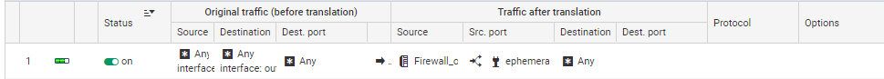
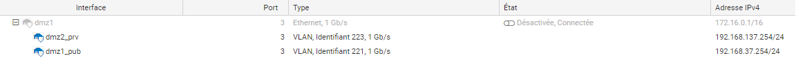

Configuration du Firewall
Installation
- Etape 1 : Se connecter au Firewall
Nous le connectons sur le PC pour la premiere utilisation.
Nous accedons au firewall pour la premiere fois via un l'IP 10.0.0.254/8. Nous devons donc changer l'ip du poste dans l'adresse ip du Firewall, puis nous avons juste a ouvrir un navigateur tel que Google et se connecter au firewall via l'URL ""https://10.0.0.254/admin""
- Etape 2 : Activation de License
Pour activer la License il nous suffit de ce rendre dans "SYSTEM -> LICENSE", puis on ajoute la Licence (au préalable récuperer au près de Mr Mery).
- Etape 3 : Formatage de la carte SD
Pour Formater la carte SD nous nous rendons dans "NOTIFICATION -> Logs" puis on choisi notre carte SD, puis on Format.
- Etape 4 : Parametres du Firewall
On décide de changer le mot de passe Admin. Pour ce faire nous nous rendons
- Etape 5 : Paramétrages Interfaces
Pour parametres les interfaces on se rend dans "NETWORK -> Interfaces" puis nous configurons nos interfaces In et Out.
On mes des ip static sur chaque interfaces puis nous ajoutons la passerelle par default qui nous serviras a sortir (passerelle routeur).
- Etape 6 : Passerelle par defaut
On ajoute la "Default Gateway" dans l'onglet "Network -> Routing".
On crée un nouvel objet en tant que Routeur en ajoutant notre passerelle pour sortir du Parefeu vers les Routeurs.
On peut tester un ping vers Google "8.8.8.8" sur le pc et le Firewall en faisant la commande :
SYSTEM PING host="adresse ip de l'hote".
- Etape 7 : Règles de Filtrages et de NAT
Pour le moment nous choissirons le type de filtrage en "Pass All" pour pouvoir faire nos test.
On ajoute une régle de NAT Dynamique qui va nous permettre de Naté une première fois via le Firewall avant les routeurs.

- Etape 8 : Route Statique
On ajoute les routes des sous réseaux de Production et de Conception, en définissant bien les réseaux en "Network" et non en "Hote" et la "Gateway" en "Routeur" et non un "Hote".
DMZ Privé
-
Étape 1 : Connexion à l'interface graphique : Connectez-vous à l'interface graphique de votre Stormshield Network Security en utilisant un navigateur Web et en entrant l'adresse IP du dispositif dans la barre d'adresse. (https://172.28.40.254/admin/admin.html)
-
Étape 2 : Ajouter les VLAN : Trouvez l'option pour ajouter de nouveaux VLAN, cela implique de spécifier le nom du VLAN "dmz1-pub" et "dmz2-prv", l'ID VLAN correspond au numéro vlan attribuer (221 pour la dmz publique, 223 pour la dmz privé), et l'adresse IP et le masque de sous-réseau associés. (pub = 192.168.37.254 /24, prv = 192.168.137.254 /24)

-
Étape 3 : Configurer l'interface DMZ : Accédez à la configuration de l'interface DMZ. Assurez-vous que l'interface DMZ est configurée avec l'adresse IP "172.16.0.1" et le masque de sous-réseau "/16".
-
Étape 4 : Configurer les ports pour les VLAN : Associez les ports physiques de votre switch à chaque VLAN. Assurez-vous que le port DMZ est configuré en mode "off" pour qu'il ne soit pas inclus dans les VLAN, mais conserve sa configuration d'adresse IP.